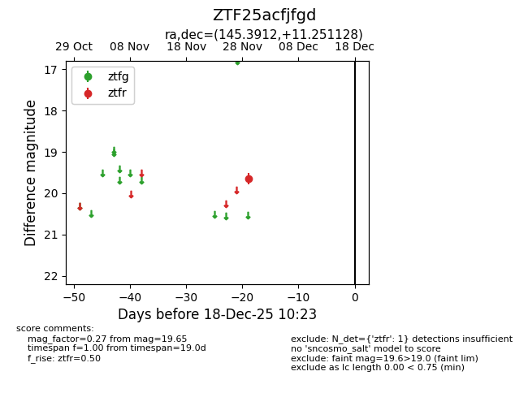
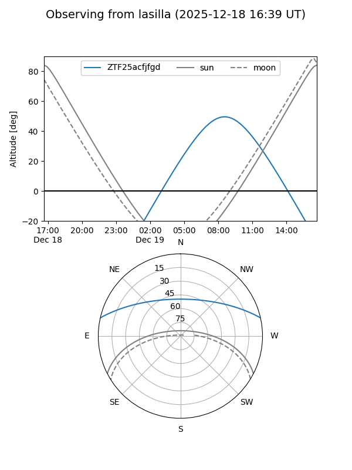
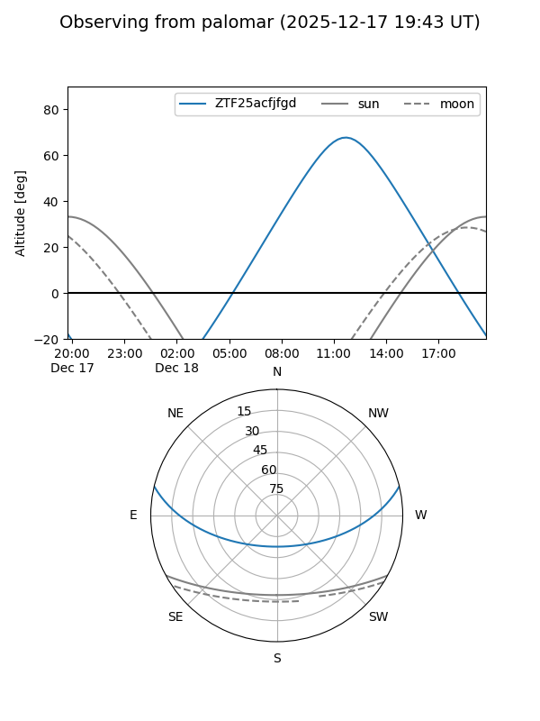

ZTF25acfjfgd
Target ZTF25acfjfgd at 2025-12-18 11:17
Aliases and brokers:
FINK: fink-portal.org/ZTF25acfjfgd
Lasair: lasair-ztf.lsst.ac.uk/objects/ZTF25acfjfgd
ALeRCE: alerce.online/object/ZTF25acfjfgd
alt names
ZTF25acfjfgd (ztf,fink_ztf)
Coordinates:
equatorial (ra, dec) = 145.3912,+11.25113
equatorial (HMS+DMS) = 09:41:33.90,+11:15:04.06
galactic (l, b) = (223.0270,+42.76829)
Photometry
last ztfr=19.65
1 ztfr detections
Lightcurve

Visibility


Additional plots